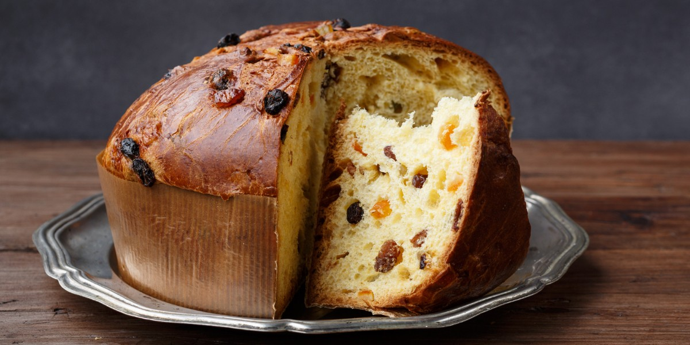

Panettone

Description
This is the ultimate Christmas dessert from Milan and the northern regions, although by now the craze for panettone has caught on at bakeries throughout Italy. It is a soft cloud of finely textured, uniform dough with a bright yellow color, filled with sultana raisins and candied fruits. When first sliced it unleashes an intense aroma of bread and citrus. There are now different versions of panettone on the market, with cream fillings, covered in chocolate and chestnuts or all kinds of frosting. The real panettone, though, remains a yeast dough with sultana raisins and candied fruit with a soft, moist, fluffy crumb.
Ingredients
- 4 tbsp warm milk
- 1 x 7g sachet fast-action dried yeast
- 150g caster sugar
- 250g butter, softened
- 5 medium eggs, lightly beaten
- 2 tsp vanilla extract
- grated zest of 1 lemon
- grated zest of 1 orange
- 550g strong white bread flour, plus extra for dusting
- 80g raisins
- 80g sultanas
- 3 tbsp dark rum
- 100g good-quality candied lemon and orange peel, finely chopped
For the topping
- 30g whole blanched almonds, roughly chopped
- 1 tbsp caster sugar
- 1 tbsp egg white
- 1 tbsp icing sugar
Steps
- Grease a panettone tin (see Tip) or a 20cm deep cake tin, or use a panettone case.
- Place the warm milk in a bowl and add the yeast and 1 tsp of sugar and leave for a few minutes.
- Put the remaining sugar in a large bowl and beat together with the butter and vanilla extract until really light, creamy and pale.
- Stir in the lemon and orange zest. Add the eggs a little at a time until all are well incorporated. Spoon in a tablespoon of the flour if the mixture starts to curdle and beat this in with the eggs.
- Place the flour in a large bowl and mix with a good pinch of salt and make a well in the centre. Add the yeast mixture then the butter and egg mixture, folding in with a large spoon to make a soft dough. Knead for 5 mins in the bowl until it all starts to come together. It will be a pretty sticky dough at this stage.
- Turn out the dough onto a floured surface and knead for a further 10 mins, until everything has come together and you have a very soft and stretchy dough. Add a light sprinkling of flour to the surface and your hands as you go to stop the mixture sticking, but try not to add too much. Place in a lightly greased bowl and cover. Place in the fridge overnight to prove.
- Place the raisins and sultanas in a small saucepan with the rum and heat gently for 5 – 7 mins until the fruit has absorbed the liquid and is plump and juicy. Set aside to cool.
- When the dough is risen, tip it out onto a lightly floured surface and knead for another 5 mins. Gradually knead in the soaked raisins, sultanas and chopped candied peel. Shape the dough into a ball and pop into the prepared tin. If using a 20cm cake tin, wrap a layer of baking parchment around the outside of the tin, to come up about 5cm above the rim, and secure the paper with string. This will help contain the dough as it rises. Cover lightly with cling film and leave to rise for 3-4 hours depending on your room temperature, until it has doubled in size
- Preheat the oven to 180C/fan 160C/gas 4. Adjust the oven shelf to the right height. Mix together the almonds, caster sugar and egg white for the topping and gently brush over the top of the panettone. Place in the oven and bake for 40 - 50 mins until golden and risen and a skewer comes out clean when inserted into the middle of the cake. Leave to cool in the tin for 10 mins before turning out onto a wire rack. Leave to cool completely before dusting lightly with icing sugar and cutting into wedges to serve.